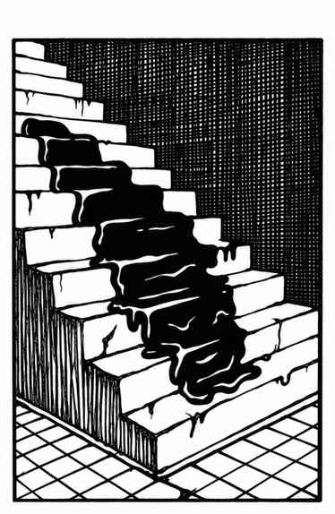

灰色软泥怪 · Gray Ooze
 |
|
灰色软泥怪是生活在地下的黏滑恐怖生物，看起来很像湿石头或沉积岩洞壁。
它腐蚀金属的速度与黑色布丁怪相同：例如，一轮近战就能蚀穿链甲。它的酸液不会伤害石头或木头。法术对它无效；它不受热与寒冷影响。闪电可对它造成全额伤害，武器攻击也有效，但武器可能因此腐蚀断裂。灰色软泥怪以蛇一般的动作扑击。
生命值超过 18 点的个体比成年男性还大；其中超过 21 点生命值的个体宽达 3 尺、长达 12 尺，但厚度只有约 6–8 寸。
特别巨大的灰色软泥怪已发展出某种智能，并具有潜在灵能能力。若有生物在其 6 寸范围内使用灵能，它会准备一次“心灵粉碎”攻击，攻击强度为 21–121 点，并对范围内使用灵能的目标发动。发动灵能攻击后，灰色软泥怪便可被灵能反击。